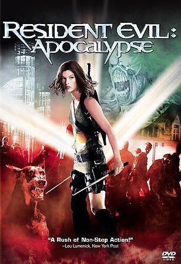

Resident Evil: Apocalypse
September 12, 2004
Horror, Action, Thriller
6.1
A deadly virus from a secret Umbrella Corporation laboratory underneath
Raccoon City is exposed to the world. Umbrella seals off the city to
contain the virus, creating a ghost town where everyone trapped inside
turns into a mutant zombie. Alice (Milla Jovovich), a survivor from
Umbrella's secret lab, meets former Umbrella security officer Jill
Valentine (Sienna Guillory) and mercenary Carlos Oliviera (Oded Fehr).
Together, they search for a scientist (Jared Harris) who might be able
to help.
Milla Jovovich
Alice